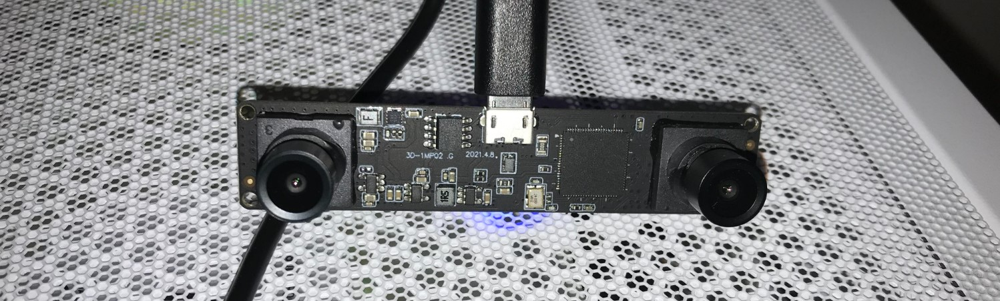
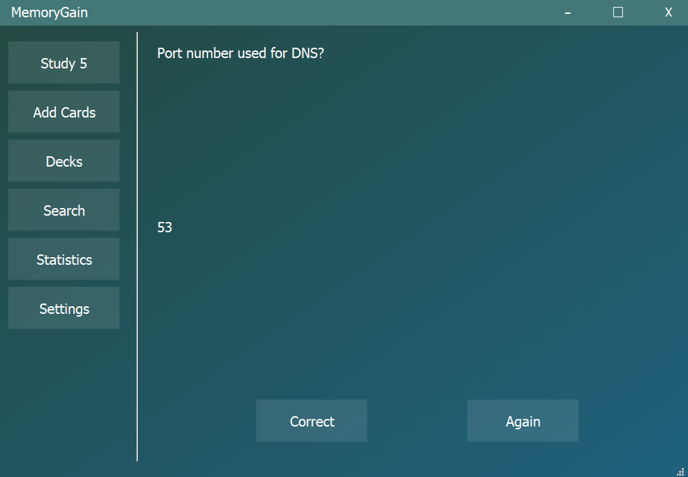
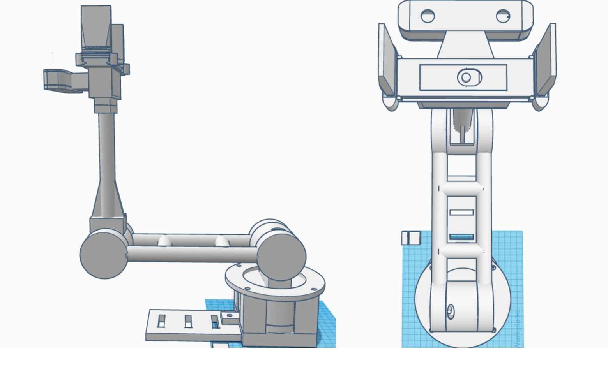

Yolov8 With Stereo Depth:

Designed for use with stereoscopic cameras. Yolov8 used to detect objects in both cameras, then my algorithm pairs up bounding boxes of the same object and triangulates depth. Further details available here.
MemoryGain:

Flashcards app that uses machine learning to aid in the learning process. Application made with PyQt. To install and find further details click here.
Robot Arm Controlled by Voice (in progress):

Desiging, 3d printing, and writing software for a robot arm controlled by natural language voice commands. The current plan is to have a microphone listen to audio, use OpenAI's whisper to convert to text, turn image data to text, pass all text to LLama3, then have LLama3 choose from a set of predefined actions to carry out.